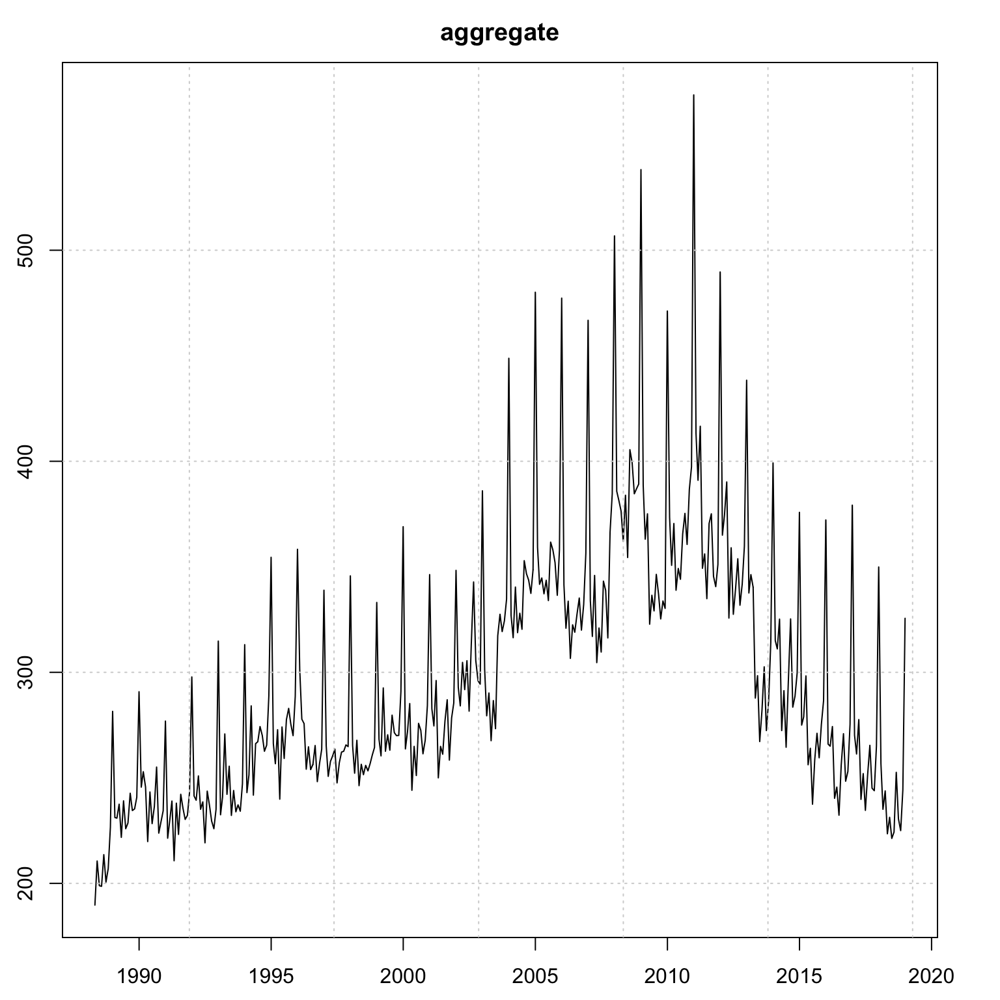

Chapter 6 tsvets package
6.1 Introduction
The vector exponential additive smoothing model (Vector ETS), introduced in De Silva, Hyndman, and Snyder (2010) naturally generalizes the univariate framework with a great deal of flexibility with the dynamics of the unobserved components. The dynamics of the states can be common, diagonal, grouped or fully parameterized, allowing for a rich set of patterns to be captured. The tsvets package implements a more general and flexible version based on Athanasopoulos and Silva (2012), with methods for estimation, inference, visualization, forecasting as well as aggregation.
Let the vector of \(N\) series at time \(t\), \(\bf{y}_t\) be represented as a linear additive combination of their unobserved level, slope and seasonal (with frequency \(m\)) components, \(\bf{l}_{t-1}\), \(\bf{b}_{t-1}\) and \(\bf{s}_{t-m}\) respectively. Formally, the conditional mean of \(\bf{\hat y}_t\) is given by:
\[\begin{equation} \bf{\hat y}_t = \bf{l}_{t - 1} + \Phi\bf{b}_{t - 1} + \bf{s}_{t - m}, \tag{6.1} \end{equation}\]
where \(\Phi\) is the \(N\times N\) matrix of dampening parameters. In its reduced form, the model without seasonality is equivalent to a VARIMA(1,2,2) model,15 and \(\Phi\) becomes the matrix of first order autoregressive coefficients.
The 1 step ahead forecast errors, \(\boldsymbol{\varepsilon}_t\) follow a multivariate normal distribution:
\[\begin{equation} {\boldsymbol{\varepsilon} _t} = {\bf{y}_t} - {{\bf{\hat y}}_t},\quad {\boldsymbol{\varepsilon} _t} \sim {\bf{N}}\left( {{\bf{0}},\Sigma } \right). \tag{6.2} \end{equation}\]
The state equations have the following dynamics:
\[\begin{equation} \begin{array}{l} {\bf{l}_t} = {\bf{l}_{t - 1}} + \Phi {\bf{b}_{t - 1}} + {\bf{A}}{\boldsymbol{\varepsilon}_t},\\ {\bf{b}_t} = \Phi {\bf{b}_{t - 1}} + {\bf{B}}{\boldsymbol{\varepsilon}_t},\\ {\bf{s}_t} = {\bf{s}_{t - m}} + {G_1}K{\boldsymbol{\varepsilon}_t},\\ {\bf{s}_{t - m}} = {\bf{s}_{t - i}} + {G_2}K{\boldsymbol{\varepsilon}_t}, \end{array} \tag{6.3} \end{equation}\]
where the matrices \(\mathbf{A}\), \(\mathbf{B}\) and \(\mathbf{K}\) represent the adjustment of the vector components to the errors, and can be diagonal, fully parameterized or scalar (common adjustment).
In vector innovations state space form, the system can be written as follows:
\[\begin{equation} \begin{array}{l} {\bf{y}_t} = H{\bf{x}_{t - 1}} + {\boldsymbol{\varepsilon}_t},\\ {\bf{x}_t} = F{\bf{x}_{t - 1}} + GA{\boldsymbol{\varepsilon}_t} \end{array} \tag{6.4} \end{equation}\]
where the matrices \(H\), \(F\), \(G\) and \(A\) are composed as follows:
\[\begin{equation} \mathop H\limits_{\left( {m + 2} \right)N \times N} = \left[ {\begin{array}{*{20}{c}} {{I_N}}\\ {{I_N}}\\ {{0_{N \times N}}}\\ \vdots \\ {{0_{N \times N}}}\\ {{I_N}} \end{array}} \right],\quad \mathop A\limits_{\left( {m + 2} \right)N \times N} = \left[ {\begin{array}{*{20}{c}} {\bf{A}}\\ {\bf{B}}\\ {\bf{K}}\\ \vdots \\ \vdots \\ {\bf{K}} \end{array}} \right], \tag{6.5} \end{equation}\]
\[\begin{equation} \mathop F\limits_{\left( {m + 2} \right)N \times \left( {m + 2} \right)N} = \left[ {\begin{array}{*{20}{c}} {{I_N}}&{{I_N}}&{{0_{N \times mN}}}\\ {{0_{N \times N}}}&{{\Phi _N}}&{{0_{N \times mN}}}\\ {{0_{mN \times N}}}&{{0_{mN \times N}}}&{\tilde{F} \otimes {I_N}} \end{array}} \right],\mathop {\tilde{F}}\limits_{m \times m} = \left[ {\begin{array}{*{20}{c}} 0&0&0& \cdots &0&1\\ 1&0&0& \cdots &0&0\\ 0&1&0& \cdots &0&0\\ \vdots & \vdots & \vdots & \ddots & \vdots & \vdots \\ 0&0&0& \cdots &1&0 \end{array}} \right], \tag{6.6} \end{equation}\]
\[\begin{equation} \mathop G\limits_{\left( {m + 2} \right)N \times \left( {m + 2} \right)N} = \left[ {\begin{array}{*{20}{c}} {{I_N}}&{{0_{N \times N}}}&{{0_{N \times mN}}}\\ {{0_{N \times N}}}&{{I_N}}&{{0_{N \times mN}}}\\ {{0_{mN \times N}}}&{{0_{mN \times N}}}&{\tilde{G} \otimes {I_N}} \end{array}} \right], \tag{6.7} \end{equation}\]
\[\begin{equation} \mathop {\tilde{G}}\limits_{m \times m} = \left[ {\begin{array}{*{20}{c}} {\frac{{m - 1}}{m}}&0& \cdots &0&0\\ 0&{ - \frac{1}{m}}& \cdots &0&0\\ 0&0&{ - \frac{1}{m}}&0&0\\ \vdots & \vdots & \vdots & \ddots & \vdots \\ 0&0&0& \cdots &{ - \frac{1}{m}} \end{array}} \right], \tag{6.8} \end{equation}\]
\[\begin{equation} \mathop {{\bf{x}_t}}\limits_{\left( {m + 2} \right)N \times N} = \left[ {\begin{array}{*{20}{c}} {{\bf{l}_t}}\\ {{\bf{b}_t}}\\ {{\bf{s}_t}}\\ \vdots \\ {{\bf{s}_{t - m + 2}}}\\ {{\bf{s}_{t - m + 1}}} \end{array}} \right]. \tag{6.9} \end{equation}\]
The values in the seasonal matrix \(\tilde{G}\) represent normalization terms which ensure that the seasonal component adds to zero throughout the updating process without becoming contaminated by the level component.
6.2 Inclusion of External Regressors
We augment the model with the ability to include external regressors (\(z_t\)) such that:
\[\begin{equation} \begin{array}{l} {\bf{y}_t} = H{\bf{x}_{t - 1}} + \mathbf{W}\bf{z}_t + {\boldsymbol{\varepsilon}_t},\\ {\bf{x}_t} = F{\bf{x}_{t - 1}} + GA{\boldsymbol{\varepsilon}_t}, \end{array} \tag{6.10} \end{equation}\]
where the \(W\) is the matrix of coefficients which are time invariant. The xreg_include argument in the vets_modelspec function is a design matrix which allows one to define which coefficients should be set to zero, which should be estimated individually as well as which should be pooled (see the documentation for more details). The index on \(\bf{z}\) is \(t\) and not \(t-1\) and it is left to the user to pre-lag any regressors passed to the function.
6.3 Log-Likelihood
The log-likelihood (\(L\)) of the model follows from the assumption that the innovations \(\boldsymbol{\varepsilon_t}\sim N\left(\bf{0}, \Sigma\right)\), leading to the following function:
\[\begin{equation} L\left(\boldsymbol{\theta} \right) = \frac{T}{2}\left( {N\log \left( {2\pi } \right) + N\log \left| \Sigma \right|} \right) - \frac{1}{2}\sum\limits_{t = 1}^T {\boldsymbol{\varepsilon_t}{\Sigma ^{ - 1}}\boldsymbol{\varepsilon_t}}, \tag{6.11} \end{equation}\]
where \(\boldsymbol{\theta}\) is the vector of parameters being optimized. We also concentrate out the parameters of the covariance matrix by using its ML estimator
\[\begin{equation} \hat \Sigma = \frac{1}{T}\sum\limits_{t = 1}^T {{\boldsymbol{\varepsilon}_t}{{\boldsymbol{\varepsilon}'}_t}}. \tag{6.12} \end{equation}\]
Therefore, the vector ETS log-likelihood is proportional to
\[\begin{equation} L\left(\boldsymbol{\theta} \right) \propto \sum\limits_{t = 1}^T {{{\boldsymbol{\varepsilon}'}_t}{{\hat \Sigma }^{ - 1}}{\boldsymbol{\varepsilon}_t}}, \tag{6.13} \end{equation}\]
which requires looping through each \(t\) to calculate the quadratic form which is expensive. Instead, we can make use of the following relationship, assuming positive-definite or positive-semi-definite \(\hat \Sigma\), \({\hat\Sigma ^{-1}} = Q\Lambda^{-1} Q'\), where \(\Lambda\) is the diagonal matrix of eigenvalues of \(\hat\Sigma\). We then have \({\varepsilon _t} = Q{\bf{u}_t}\) where \(\bf{u}_t\) are the projections onto the eigenvectors \(Q\). The negative of the log-likelihood can be represented as:
\[\begin{equation} L\left( \boldsymbol{\theta} \right) = \frac{1}{2}T\left( {N\log 2\pi - \log \left| {\hat \Sigma } \right|} \right) + \frac{1}{2}{{{\bf{1'}}}_T}\left( {{{\left( {\varepsilon Q} \right)}^2}\frac{1}{\lambda }} \right), \tag{6.14} \end{equation}\]
where we have used the relation \(Q^{-1} = Q'\) due to \(\hat{\Sigma}\) being symmetric (and thus \(Q\) is orthogonal), and \(1 / \lambda\) is a vector containing the reporicals of the eigenvalues.
Additionally, we constrain the \(N+1\) largest eigenvalues (\(\lambda_s\)) to be less than 1 to ensure invertibility of the system, such that
\[\begin{equation} {\lambda _s}\left( D \right) < 1,D = F - GAH. \tag{6.15} \end{equation}\]
This is added as a soft barrier constraint. The diagonal elements of the level, slope, dampening and seasonal matrices are bounded between 0 and 1, while the off diagonal elements are allowed to vary between -1 and 1.16
Finally, the initial seed values for each of the states are approximated using the heuristic approach from the univariate ETS model as described in Section 4.5.2.
6.4 Dependence Structure
While Equation (5.10) assumes a full covariance matrix, allowing contemporaneous associations among the residuals, we also offer 3 additional estimators for the dependence structure: diagonal covariance, equicorrelation and shrinkage covariance based on the estimator of Ledoit and Wolf (2004).
6.4.1 Diagonal Covariance
The diagonal covariance matrix is the one used by Athanasopoulos and Silva (2012), and leads to the fastest estimation. In this case, the log-likelihood is greatly simplified and equal to
\[\begin{equation} \frac{T}{2}\left( {N\log \left( {2\pi } \right) + N\log \left| \Sigma \right|} \right) - \frac{1}{2}\sum\limits_{t = 1}^T {\sum\limits_{i = 1}^N {\varepsilon _{it}^2/\sigma _i^2} }. \tag{6.16} \end{equation}\]
6.4.2 Equicorrelation
The equicorrelation covariance assumes that the correlation across all series is set to some common value \(\rho\). The correlation matrix \(\bf{R}\) can be calculated as
\[\begin{equation} {\bf{R}} = \rho {\bf{11'}} + \left( {1 - \rho } \right){\bf{I}}, \tag{6.17} \end{equation}\]
which is guaranteed to be positive definite as long as \(-\frac{1}{{N - 1}}<\rho< 1\). The covariance is then equal to:
\[\begin{equation} {\Sigma} = {\bf{DRD'}}, \tag{6.18} \end{equation}\]
where \({\bf{D}} = diag\left( {{\hat \sigma _1},\dots,{\hat \sigma _n}} \right)\). Some of the advantages of assuming equicorrelation are discussed in Clements, Scott, and Silvennoinen (2015).
6.4.3 Shrinkage Covariance
The shrinkage estimator of Ledoit and Wolf (2004) follows from the observation that the eigenvalues of the estimated correlations tend to be more dispersed than the eigenvalues of the true data generating process. The shrinkage estimator of the covariance is based on a convex combination of the sample covariance \(\hat\Sigma\) and a target covariance set to a multiple of the identity matrix. It is this combination weight \(\rho\) which we estimate in the case of the shrinkage estimator
\[\begin{equation} {\Sigma} = \left( {1 - \rho } \right)\Sigma + \frac{\rho }{n}tr\left( \Sigma \right){\bf{I}}. \tag{6.18} \end{equation}\]
6.5 Grouping and Pooling
The tsvets package allows both global pooling of state component coefficients as well as group-wise pooling. For instance, if we had a large-dimensional system composed of series which have some common grouping structure (e.g. geographical, feature or statistical based), we could impose that these groups have common dynamics for some or all of the components. We provide an example of this in the demonstration section.
6.6 Homogeneous Coefficients and Aggregation
When a model is estimated with all components pooled (i.e. common coefficients), then we can aggregate the model to obtain an aggregated representation in closed form, following Section 17.1.2 of R. Hyndman et al. (2008). When this is not the case, we can still obtain an aggregated series from the estimation and prediction objects. This functionality is implemented via the tsaggregate method and we provide an example in the demonstration section.
6.7 Demonstration
6.7.1 Specification
The specification function defines the entry point for setting up a vets model:
suppressWarnings(suppressPackageStartupMessages(library(tsvets)))
args(vets_modelspec)## function (y, level = c("constant", "diagonal", "common", "full",
## "grouped"), slope = c("none", "constant", "common", "diagonal",
## "full", "grouped"), damped = c("none", "common", "diagonal",
## "full", "grouped"), seasonal = c("none", "common", "diagonal",
## "full", "grouped"), group = NULL, xreg = NULL, xreg_include = NULL,
## frequency = 1, lambda = NULL, lambda_lower = 0, lambda_upper = 1.5,
## dependence = c("diagonal", "full", "equicorrelation", "shrinkage"),
## cores = 1)
## NULLThe specification has options for how the components of level, slope, dampening, seasonality are structured as well as the type of dependence to use. We also allow multicore processing since we require the initial state vectors to be calculated through calls to the tsets package, which can be done in parallel. The lambda argument can be set either to NA, in which case the multivariate version of the Box Cox transformation is used which targets a transformation to multivariate normality based on Velilla (1993) using the powerTransform function from the car package of Fox, Weisberg, and Price (2021), a vector of length equal to the number of series of a single number to apply to all series, and NULL in which case no transformation is performed.
The next sections provide fully worked examples with methods showcasing the functionality of the package under different assumptions.
6.7.2 Example: Australian Retail Sales
We use a subset of the Australian retail dataset from package tsdatasets representing the monthly retail turnover in $Million AUD across different regions for the news vendor category, with common level, constant slope and diagonal seasonal and dependence structure.
suppressWarnings(suppressPackageStartupMessages(library(tsvets)))
suppressMessages(library(tsmethods))
suppressMessages(library(tsaux))
suppressMessages(library(xts))
data("austretail", package = "tsdatasets")
y <- na.omit(austretail[,grepl("NEWS", colnames(austretail))])
spec <- vets_modelspec(y, level = "common", slope = "constant", damped = "none",
seasonal = "diagonal", lambda = NA, dependence = "diagonal",
frequency = 12, cores = 3)
mod <- estimate(spec, solver = "solnp", control = list(trace = 0))The joint estimation of the 8 series takes about 0.280345 seconds. The summary object prints the full matrices for each component using the Matrix package of Bates and Maechler (2021). The summary method also take an optional weights argument which is used to calculate the weighted Accuracy Criteria, and when this is NULL, an equal weight vector is used instead (and hence equivalent to the Mean Criteria).
Similar to other packages, there is a diagnostics method tsdiagnose which prints the eiganvalues of the \(D\) matrix as well as the output from a multivariate Normality Test and Multivariate Outliers based on the mvn function of the MVN package of Korkmaz, Goksuluk, and Zararsiz (2021).
summary(mod)##
## Vector ETS
## -----------------------------------
## Level : common
## Slope : constant
## Seasonal : diagonal
## Dependence : diagonal
## No. Series : 8
## No. TimePoints : 369
##
## Parameter Matrices
##
## Level Matrix
## 8 x 8 diagonal matrix of class "ddiMatrix"
## [,1] [,2] [,3] [,4] [,5] [,6] [,7]
## [1,] 0.7228622 . . . . . .
## [2,] . 0.7228622 . . . . .
## [3,] . . 0.7228622 . . . .
## [4,] . . . 0.7228622 . . .
## [5,] . . . . 0.7228622 . .
## [6,] . . . . . 0.7228622 .
## [7,] . . . . . . 0.7228622
## [8,] . . . . . . .
## [,8]
## [1,] .
## [2,] .
## [3,] .
## [4,] .
## [5,] .
## [6,] .
## [7,] .
## [8,] 0.7228622
##
## Slope Matrix
## 8 x 8 diagonal matrix of class "ddiMatrix"
## [,1] [,2] [,3] [,4] [,5] [,6] [,7] [,8]
## [1,] 0 . . . . . . .
## [2,] . 0 . . . . . .
## [3,] . . 0 . . . . .
## [4,] . . . 0 . . . .
## [5,] . . . . 0 . . .
## [6,] . . . . . 0 . .
## [7,] . . . . . . 0 .
## [8,] . . . . . . . 0
##
## Seasonal Matrix
## 8 x 8 diagonal matrix of class "ddiMatrix"
## [,1] [,2] [,3] [,4] [,5] [,6]
## [1,] 0.2856892 . . . . .
## [2,] . 2.394973e-09 . . . .
## [3,] . . 3.846394e-09 . . .
## [4,] . . . 5.731333e-09 . .
## [5,] . . . . 3.579614e-09 .
## [6,] . . . . . 6.533816e-09
## [7,] . . . . . .
## [8,] . . . . . .
## [,7] [,8]
## [1,] . .
## [2,] . .
## [3,] . .
## [4,] . .
## [5,] . .
## [6,] . .
## [7,] 0.1510414 .
## [8,] . 2.543775e-09
##
## Correlation Matrix
## 8 x 8 Matrix of class "dsyMatrix"
## ACF.NEWS NSW.NEWS NT.NEWS Q.NEWS SA.NEWS T.NEWS
## ACF.NEWS 1.00000000 0.08057297 0.03290566 0.17033180 0.05277473 0.0949446131
## NSW.NEWS 0.08057297 1.00000000 0.20605978 0.15796179 0.11770664 0.1722585272
## NT.NEWS 0.03290566 0.20605978 1.00000000 0.11508855 0.09843727 0.1272152787
## Q.NEWS 0.17033180 0.15796179 0.11508855 1.00000000 0.13848105 0.0596666377
## SA.NEWS 0.05277473 0.11770664 0.09843727 0.13848105 1.00000000 0.0589546630
## T.NEWS 0.09494461 0.17225853 0.12721528 0.05966664 0.05895466 1.0000000000
## V.NEWS 0.20518539 0.23059292 0.11487366 0.10417249 0.14053366 0.0728362365
## WA.NEWS -0.02846502 0.20588546 0.19406784 0.17145175 0.12032267 -0.0006090754
## V.NEWS WA.NEWS
## ACF.NEWS 0.20518539 -0.0284650215
## NSW.NEWS 0.23059292 0.2058854559
## NT.NEWS 0.11487366 0.1940678390
## Q.NEWS 0.10417249 0.1714517524
## SA.NEWS 0.14053366 0.1203226677
## T.NEWS 0.07283624 -0.0006090754
## V.NEWS 1.00000000 0.0313059007
## WA.NEWS 0.03130590 1.0000000000
##
## Information Criteria
## AIC BIC AICc
## 1276.07 2000.89 1286.5
##
## Accuracy Criteria
## Mean Weighted
## MAPE 0.0618 0.0618
## MSLRE 0.0068 0.0068tsdiagnose(mod)## Real Eigenvalues (D): 1 1 1 1 1 1 1 1 1 1 1 1 1 1 1 1 0.866 0.866 0.866 0.866 0.866 0.866 0.866 0.866 0.866 0.866 0.866 0.866 0.5 0.5 0.5 0.5 0 0 0.5 0.5 0 0 0.5 0.5 0.5 0.5 0.5 0.5 0.866 0.866 1 0.866 0.866 1 0 0 0 0 0.5 0.5 0.5 0.5 0.5 0.5 0.5 0.5 0.866 0.866 1 0.866 0.866 1 0 0 0 0 0.5 0.5 0.866 0.866 1 0.5 0.5 0.866 0.866 1 0.867 0.867 0.869 0.869 0.505 0.505 0.01 0.01 0.511 0.511 0.484 0.484 0.846 0.846 0.978 0.023 0.023 0.465 0.465 0.822 0.822 0.952 0.277 0.277 0.277 0.277 0.277 0.277 0.163 0.021
##
## Multivariate Normality Tests
## Test E df p value MVN
## 1 Doornik-Hansen 216.9969 16 2.844037e-37 NO
##
## Univariate Normality Tests
## Test Variable Statistic p value Normality
## 1 Shapiro-Francia ACF.NEWS 0.9849 0.0011 NO
## 2 Shapiro-Francia NSW.NEWS 0.9943 0.1602 YES
## 3 Shapiro-Francia NT.NEWS 0.9720 <0.001 NO
## 4 Shapiro-Francia Q.NEWS 0.9860 0.0018 NO
## 5 Shapiro-Francia SA.NEWS 0.9845 9e-04 NO
## 6 Shapiro-Francia T.NEWS 0.9867 0.0026 NO
## 7 Shapiro-Francia V.NEWS 0.9688 <0.001 NO
## 8 Shapiro-Francia WA.NEWS 0.9737 <0.001 NO
##
## Multivariate Outliers (Mahalanobis Distance)
## Observation Mahalanobis Distance Outlier
## 9 1988-12-31 21.264 TRUE
## 21 1989-12-31 27.756 TRUE
## 24 1990-03-31 28.731 TRUE
## 33 1990-12-31 21.301 TRUE
## 54 1992-09-30 26.701 TRUE
## 57 1992-12-31 19.622 TRUE
## 59 1993-02-28 19.611 TRUE
## 60 1993-03-31 20.677 TRUE
## 63 1993-06-30 24.081 TRUE
## 64 1993-07-31 20.255 TRUE
## 66 1993-09-30 24.531 TRUE
## 69 1993-12-31 72.481 TRUE
## 72 1994-03-31 35.717 TRUE
## 79 1994-10-31 19.122 TRUE
## 94 1996-01-31 21.925 TRUE
## 105 1996-12-31 53.707 TRUE
## 106 1997-01-31 28.626 TRUE
## 109 1997-04-30 20.485 TRUE
## 121 1998-04-30 45.002 TRUE
## 124 1998-07-31 21.235 TRUE
## 136 1999-07-31 19.706 TRUE
## 142 2000-01-31 47.132 TRUE
## 143 2000-02-29 22.048 TRUE
## 148 2000-07-31 23.980 TRUE
## 157 2001-04-30 31.793 TRUE
## 166 2002-01-31 28.374 TRUE
## 169 2002-04-30 19.785 TRUE
## 172 2002-07-31 56.104 TRUE
## 184 2003-07-31 31.963 TRUE
## 223 2006-10-31 19.369 TRUE
## 226 2007-01-31 26.189 TRUE
## 235 2007-10-31 93.086 TRUE
## 238 2008-01-31 26.753 TRUE
## 241 2008-04-30 35.413 TRUE
## 251 2009-02-28 25.327 TRUE
## 256 2009-07-31 27.555 TRUE
## 259 2009-10-31 22.694 TRUE
## 261 2009-12-31 24.791 TRUE
## 262 2010-01-31 78.543 TRUE
## 263 2010-02-28 57.752 TRUE
## 265 2010-04-30 34.002 TRUE
## 268 2010-07-31 28.282 TRUE
## 274 2011-01-31 107.805 TRUE
## 285 2011-12-31 27.791 TRUE
## 286 2012-01-31 58.481 TRUE
## 287 2012-02-29 23.743 TRUE
## 293 2012-08-31 18.883 TRUE
## 295 2012-10-31 31.069 TRUE
## 301 2013-04-30 58.107 TRUE
## 302 2013-05-31 23.596 TRUE
## 307 2013-10-31 22.618 TRUE
## 309 2013-12-31 32.214 TRUE
## 310 2014-01-31 42.566 TRUE
## 316 2014-07-31 21.128 TRUE
## 322 2015-01-31 20.692 TRUE
## 364 2018-07-31 19.370 TRUE
## 365 2018-08-31 21.088 TRUEAdditional methods are similar to what is available in other packages.
Coefficients:
coef(mod)## Level[Common] Seasonal[ACF.NEWS] Seasonal[NSW.NEWS] Seasonal[NT.NEWS]
## 7.228622e-01 2.856892e-01 2.394973e-09 3.846394e-09
## Seasonal[Q.NEWS] Seasonal[SA.NEWS] Seasonal[T.NEWS] Seasonal[V.NEWS]
## 5.731333e-09 3.579614e-09 6.533816e-09 1.510414e-01
## Seasonal[WA.NEWS]
## 2.543775e-09Loglikelihood and AIC:
logLik(mod)## 'log Lik.' 1034.07 (df=121)AIC(mod)## [1] 1276.07Performance metrics with optional weights option:
tsmetrics(mod, weights = runif(8))## N no_pars LogLik AIC BIC AICc MAPE MSLRE
## 1 2952 121 1034.07 1276.07 2000.889 1286.502 0.06177683 0.006825589
## WAPE WSLRE
## 1 0.0619873 0.006859379tscor(mod)## 8 x 8 Matrix of class "dsyMatrix"
## ACF.NEWS NSW.NEWS NT.NEWS Q.NEWS SA.NEWS T.NEWS
## ACF.NEWS 1.00000000 0.08057297 0.03290566 0.17033180 0.05277473 0.0949446131
## NSW.NEWS 0.08057297 1.00000000 0.20605978 0.15796179 0.11770664 0.1722585272
## NT.NEWS 0.03290566 0.20605978 1.00000000 0.11508855 0.09843727 0.1272152787
## Q.NEWS 0.17033180 0.15796179 0.11508855 1.00000000 0.13848105 0.0596666377
## SA.NEWS 0.05277473 0.11770664 0.09843727 0.13848105 1.00000000 0.0589546630
## T.NEWS 0.09494461 0.17225853 0.12721528 0.05966664 0.05895466 1.0000000000
## V.NEWS 0.20518539 0.23059292 0.11487366 0.10417249 0.14053366 0.0728362365
## WA.NEWS -0.02846502 0.20588546 0.19406784 0.17145175 0.12032267 -0.0006090754
## V.NEWS WA.NEWS
## ACF.NEWS 0.20518539 -0.0284650215
## NSW.NEWS 0.23059292 0.2058854559
## NT.NEWS 0.11487366 0.1940678390
## Q.NEWS 0.10417249 0.1714517524
## SA.NEWS 0.14053366 0.1203226677
## T.NEWS 0.07283624 -0.0006090754
## V.NEWS 1.00000000 0.0313059007
## WA.NEWS 0.03130590 1.0000000000Correlation and covariance matrices:
tscov(mod)## 8 x 8 Matrix of class "dsyMatrix"
## ACF.NEWS NSW.NEWS NT.NEWS Q.NEWS SA.NEWS
## ACF.NEWS 0.0114807146 0.0005198327 0.0006257583 0.0011577660 0.0004522868
## NSW.NEWS 0.0005198327 0.0036255973 0.0022020876 0.0006033682 0.0005668839
## NT.NEWS 0.0006257583 0.0022020876 0.0314994638 0.0012957591 0.0013973801
## Q.NEWS 0.0011577660 0.0006033682 0.0012957591 0.0040242151 0.0007026424
## SA.NEWS 0.0004522868 0.0005668839 0.0013973801 0.0007026424 0.0063974488
## T.NEWS 0.0026772075 0.0027295921 0.0059418008 0.0009960919 0.0012409344
## V.NEWS 0.0016234402 0.0010252769 0.0015054886 0.0004879767 0.0008300212
## WA.NEWS -0.0012121833 0.0049270593 0.0136891817 0.0043226977 0.0038249274
## T.NEWS V.NEWS WA.NEWS
## ACF.NEWS 2.677207e-03 0.0016234402 -1.212183e-03
## NSW.NEWS 2.729592e-03 0.0010252769 4.927059e-03
## NT.NEWS 5.941801e-03 0.0015054886 1.368918e-02
## Q.NEWS 9.960919e-04 0.0004879767 4.322698e-03
## SA.NEWS 1.240934e-03 0.0008300212 3.824927e-03
## T.NEWS 6.925553e-02 0.0014154031 -6.370458e-05
## V.NEWS 1.415403e-03 0.0054526903 9.187640e-04
## WA.NEWS -6.370458e-05 0.0009187640 1.579591e-01tscor(mod)## 8 x 8 Matrix of class "dsyMatrix"
## ACF.NEWS NSW.NEWS NT.NEWS Q.NEWS SA.NEWS T.NEWS
## ACF.NEWS 1.00000000 0.08057297 0.03290566 0.17033180 0.05277473 0.0949446131
## NSW.NEWS 0.08057297 1.00000000 0.20605978 0.15796179 0.11770664 0.1722585272
## NT.NEWS 0.03290566 0.20605978 1.00000000 0.11508855 0.09843727 0.1272152787
## Q.NEWS 0.17033180 0.15796179 0.11508855 1.00000000 0.13848105 0.0596666377
## SA.NEWS 0.05277473 0.11770664 0.09843727 0.13848105 1.00000000 0.0589546630
## T.NEWS 0.09494461 0.17225853 0.12721528 0.05966664 0.05895466 1.0000000000
## V.NEWS 0.20518539 0.23059292 0.11487366 0.10417249 0.14053366 0.0728362365
## WA.NEWS -0.02846502 0.20588546 0.19406784 0.17145175 0.12032267 -0.0006090754
## V.NEWS WA.NEWS
## ACF.NEWS 0.20518539 -0.0284650215
## NSW.NEWS 0.23059292 0.2058854559
## NT.NEWS 0.11487366 0.1940678390
## Q.NEWS 0.10417249 0.1714517524
## SA.NEWS 0.14053366 0.1203226677
## T.NEWS 0.07283624 -0.0006090754
## V.NEWS 1.00000000 0.0313059007
## WA.NEWS 0.03130590 1.0000000000Note that, even though we impose a diagonal covariance matrix structure, we still return the full covariance matrix in tscov.
Fitted and residuals:
head(fitted(mod)[,1:4], 4)## ACF.NEWS NSW.NEWS NT.NEWS Q.NEWS
## 1988-04-30 5.083103 73.64493 1.826401 32.42638
## 1988-05-31 5.676515 77.54210 1.989457 33.63410
## 1988-06-30 5.075795 74.71801 2.035407 34.26671
## 1988-07-31 4.934308 80.55045 2.505494 36.89035head(residuals(mod)[,1:4], 4)## ACF.NEWS NSW.NEWS NT.NEWS Q.NEWS
## 1988-04-30 0.01689726 -0.6449279 -0.02640146 -0.6263813
## 1988-05-31 -0.07651455 2.7578955 0.01054259 3.0658951
## 1988-06-30 -0.07579501 0.5819926 0.36459305 0.4332870
## 1988-07-31 -0.03430793 -6.3504510 -0.10549408 2.2096475head(residuals(mod, raw = TRUE)[,1:4], 4)## ACF.NEWS NSW.NEWS NT.NEWS Q.NEWS
## 1988-04-30 0.003682669 -0.008795832 -0.020383862 -0.01950604
## 1988-05-31 -0.015157705 0.034948548 0.007808924 0.08723617
## 1988-06-30 -0.016684017 0.007759009 0.258079365 0.01256527
## 1988-07-31 -0.007725214 -0.082119558 -0.071428367 0.05817240where argument raw denotes the non backtransformed residuals (if a Box Cox calculation was used).
States decomposition:
tsx <- tsdecompose(mod)
head(tsx$Level[,1:4], 4)## Level[ACF.NEWS] Level[NSW.NEWS] Level[NT.NEWS] Level[Q.NEWS]
## 1988-04-30 1.786760 4.364053 0.8568871 3.546528
## 1988-05-31 1.775698 4.389549 0.8605698 3.610766
## 1988-06-30 1.763532 4.395390 1.0451636 3.621028
## 1988-07-31 1.757843 4.336261 0.9915687 3.664258head(tsx$Slope[,1:4], 4)## Slope[ACF.NEWS] Slope[NSW.NEWS] Slope[NT.NEWS] Slope[Q.NEWS]
## 1988-04-30 -0.0001052268 0.0002321876 -0.001962038 0.001179098
## 1988-05-31 -0.0001052268 0.0002321876 -0.001962038 0.001179098
## 1988-06-30 -0.0001052268 0.0002321876 -0.001962038 0.001179098
## 1988-07-31 -0.0001052268 0.0002321876 -0.001962038 0.001179098head(tsx$Seasonal[,1:4], 4)## Seasonal[ACF.NEWS] Seasonal[NSW.NEWS] Seasonal[NT.NEWS]
## 1988-04-30 0.049736578 -0.013464613 -0.01416351
## 1988-05-31 -0.063743434 -0.076059732 0.01605865
## 1988-06-30 -0.082914767 -0.006738031 0.16097260
## 1988-07-31 -0.003446856 0.020157472 0.13901380
## Seasonal[Q.NEWS]
## 1988-04-30 -0.032166073
## 1988-05-31 -0.077771070
## 1988-06-30 -0.014257476
## 1988-07-31 0.009366023Plot methods exist outputting the fitted values, the states and the residuals, with an argument for the series to output, with a maximum number per call of 10 series:
plot(mod)
plot(mod, type = "states")
plot(mod, type = "residuals")The predict function will output a list which includes data.table of each series’ prediction object and state decomposition:
p <- predict(mod, h = 12)
p$prediction_table## series Level Slope Seasonal X
## 1: ACF.NEWS <tsmodel.predict[2]> <tsmodel.predict[2]> <tsmodel.predict[2]>
## 2: NSW.NEWS <tsmodel.predict[2]> <tsmodel.predict[2]> <tsmodel.predict[2]>
## 3: NT.NEWS <tsmodel.predict[2]> <tsmodel.predict[2]> <tsmodel.predict[2]>
## 4: Q.NEWS <tsmodel.predict[2]> <tsmodel.predict[2]> <tsmodel.predict[2]>
## 5: SA.NEWS <tsmodel.predict[2]> <tsmodel.predict[2]> <tsmodel.predict[2]>
## 6: T.NEWS <tsmodel.predict[2]> <tsmodel.predict[2]> <tsmodel.predict[2]>
## 7: V.NEWS <tsmodel.predict[2]> <tsmodel.predict[2]> <tsmodel.predict[2]>
## 8: WA.NEWS <tsmodel.predict[2]> <tsmodel.predict[2]> <tsmodel.predict[2]>
## Error Predicted
## 1: <tsmodel.predict[2]> <tsmodel.predict[2]>
## 2: <tsmodel.predict[2]> <tsmodel.predict[2]>
## 3: <tsmodel.predict[2]> <tsmodel.predict[2]>
## 4: <tsmodel.predict[2]> <tsmodel.predict[2]>
## 5: <tsmodel.predict[2]> <tsmodel.predict[2]>
## 6: <tsmodel.predict[2]> <tsmodel.predict[2]>
## 7: <tsmodel.predict[2]> <tsmodel.predict[2]>
## 8: <tsmodel.predict[2]> <tsmodel.predict[2]>The plot method on the predicted object can output 1 series at a time using the series argument:
plot(p, series = 2)
The simulation method also returns a list with a data.table object with each series’ simulation object and state decomposition. Additionally, there are optional arguments for the initial state to use (init_states) and parameter vector (pars).
s <- simulate(mod, h = 12*8, nsim = 100, init_states = mod$spec$vets_env$States[,1])
s$simulation_table## series Level Slope Seasonal
## 1: ACF.NEWS <tsmodel.predict[2]> <tsmodel.predict[2]> <tsmodel.predict[2]>
## 2: NSW.NEWS <tsmodel.predict[2]> <tsmodel.predict[2]> <tsmodel.predict[2]>
## 3: NT.NEWS <tsmodel.predict[2]> <tsmodel.predict[2]> <tsmodel.predict[2]>
## 4: Q.NEWS <tsmodel.predict[2]> <tsmodel.predict[2]> <tsmodel.predict[2]>
## 5: SA.NEWS <tsmodel.predict[2]> <tsmodel.predict[2]> <tsmodel.predict[2]>
## 6: T.NEWS <tsmodel.predict[2]> <tsmodel.predict[2]> <tsmodel.predict[2]>
## 7: V.NEWS <tsmodel.predict[2]> <tsmodel.predict[2]> <tsmodel.predict[2]>
## 8: WA.NEWS <tsmodel.predict[2]> <tsmodel.predict[2]> <tsmodel.predict[2]>
## Simulated
## 1: <tsmodel.predict[2]>
## 2: <tsmodel.predict[2]>
## 3: <tsmodel.predict[2]>
## 4: <tsmodel.predict[2]>
## 5: <tsmodel.predict[2]>
## 6: <tsmodel.predict[2]>
## 7: <tsmodel.predict[2]>
## 8: <tsmodel.predict[2]>par(mfrow = c(4,1),mar = c(3,3,3,3))
plot(s$simulation_table[series == "ACF.NEWS"]$Simulated[[1]], main = "Simulated Series")
plot(s$simulation_table[series == "ACF.NEWS"]$Level[[1]], main = "Simulated Level")
plot(s$simulation_table[series == "ACF.NEWS"]$Slope[[1]], main = "Simulated Slope")
plot(s$simulation_table[series == "ACF.NEWS"]$Seasonal[[1]], main = "Simulated Seasonal")
The tsbacktest method has similar arguments to other backtest implementations in the tsmodels framework:
b <- tsbacktest(spec, h = 12, cores = 5, solver = "nlminb", trace = 0, autodiff = TRUE)The returned object is a list of 2 data.tables with the predictions for each series by estimation date and horizon and the summary metrics table:
head(b$prediction)## series estimation_date horizon size forecast_dates forecast actual
## 1: ACF.NEWS 2003-07-31 1 184 2003-08-31 11.15297 11.2
## 2: ACF.NEWS 2003-07-31 2 184 2003-09-30 10.61685 10.1
## 3: ACF.NEWS 2003-07-31 3 184 2003-10-31 10.51334 9.7
## 4: ACF.NEWS 2003-07-31 4 184 2003-11-30 11.18095 9.7
## 5: ACF.NEWS 2003-07-31 5 184 2003-12-31 15.55127 14.2
## 6: ACF.NEWS 2003-07-31 6 184 2004-01-31 10.19090 8.6head(b$metrics)## series horizon MAPE MSLRE BIAS n
## 1: ACF.NEWS 1 0.08344100 0.01147017 0.01528171 185
## 2: ACF.NEWS 2 0.09773936 0.01462113 0.02457635 184
## 3: ACF.NEWS 3 0.10865025 0.01753223 0.03328862 183
## 4: ACF.NEWS 4 0.11919299 0.02081765 0.04233478 182
## 5: ACF.NEWS 5 0.11657522 0.02062666 0.05092162 181
## 6: ACF.NEWS 6 0.12625000 0.02294433 0.05890854 1806.7.3 Example: Australian Retail Sales Grouped Dynamics
In this example, we show how grouping works on 99 series, where grouping is by sector.
suppressWarnings(suppressPackageStartupMessages(library(tsvets)))
suppressMessages(library(tsmethods))
suppressMessages(library(tsaux))
suppressMessages(library(xts))
suppressMessages(library(data.table))
data("austretail", package = "tsdatasets")
y <- austretail["2000/"]
include <- sapply(1:ncol(y), function(i) all(!is.na(y[,i])))
y <- y[,include]
groups <- sapply(1:ncol(y), function(i) strsplit(colnames(y[,i]), "\\.")[[1]][2])
groups_index <- sort.int(groups, index.return = TRUE)
y <- y[,groups_index$ix]
groups <- groups[groups_index$ix]
groups <- rle(groups)$lengths
groups <- unlist(sapply(1:length(groups), function(i) rep(i, groups[i])))
spec <- vets_modelspec(y[,1:99], level = "grouped", slope = "grouped", damped = "none",
group = groups[1:99], seasonal = "grouped", lambda = 0.5,
dependence = "diagonal", frequency = 12, cores = 3)
mod <- estimate(spec, solver = "solnp", control = list(trace = 0))The joint estimation of the 99 series takes about 3.366302 minutes.
We avoid the summary method for such a large object, and instead print out the coefficients and the performance metrics:
cf <- coef(mod)
print(data.table::data.table(Coefficient = names(cf), Value = round(cf,4)))## Coefficient Value
## 1: Level[Group = 1] 0.4458
## 2: Level[Group = 2] 0.5108
## 3: Level[Group = 3] 0.7151
## 4: Level[Group = 4] 0.6882
## 5: Level[Group = 5] 0.1675
## 6: Level[Group = 6] 0.5208
## 7: Level[Group = 7] 0.5494
## 8: Level[Group = 8] 0.4183
## 9: Level[Group = 9] 0.5011
## 10: Level[Group = 10] 0.5771
## 11: Level[Group = 11] 0.7378
## 12: Level[Group = 12] 0.4934
## 13: Level[Group = 13] 0.7206
## 14: Slope[Group = 1] 0.0000
## 15: Slope[Group = 2] 0.0000
## 16: Slope[Group = 3] 0.0000
## 17: Slope[Group = 4] 0.0000
## 18: Slope[Group = 5] 0.0074
## 19: Slope[Group = 6] 0.0000
## 20: Slope[Group = 7] 0.0000
## 21: Slope[Group = 8] 0.0000
## 22: Slope[Group = 9] 0.0000
## 23: Slope[Group = 10] 0.0061
## 24: Slope[Group = 11] 0.0000
## 25: Slope[Group = 12] 0.0000
## 26: Slope[Group = 13] 0.0000
## 27: Seasonal[Group = 1] 0.3440
## 28: Seasonal[Group = 2] 0.1879
## 29: Seasonal[Group = 3] 0.0000
## 30: Seasonal[Group = 4] 0.0000
## 31: Seasonal[Group = 5] 0.1335
## 32: Seasonal[Group = 6] 0.2645
## 33: Seasonal[Group = 7] 0.0000
## 34: Seasonal[Group = 8] 0.3150
## 35: Seasonal[Group = 9] 0.3885
## 36: Seasonal[Group = 10] 0.0000
## 37: Seasonal[Group = 11] 0.0000
## 38: Seasonal[Group = 12] 0.2692
## 39: Seasonal[Group = 13] 0.0000
## Coefficient Valuetsmetrics(mod)## N no_pars LogLik AIC BIC AICc MAPE MSLRE
## 1 22572 1425 -7562.715 -4712.715 6722.149 -4520.522 0.04042485 0.003137474
## WAPE WSLRE
## 1 0.04042485 0.003137474plot(mod, series = (1:99)[groups == 4])
plot(mod, series = (1:99)[groups == 4], type = "states")
plot(mod, series = (1:99)[groups == 4], type = "residuals")6.7.4 Example: Australian Retail Sales Filtering
This example highlights the use of the tsfilter method for online filtering as already discussed in Sections 4.6.4 and 5.5.5.
suppressWarnings(suppressPackageStartupMessages(library(tsvets)))
suppressMessages(library(tsmethods))
suppressMessages(library(tsaux))
suppressMessages(library(xts))
data("austretail", package = "tsdatasets")
y <- na.omit(austretail[,grepl("NEWS", colnames(austretail))])
y_train <- y[1:(369 - 24)]
y_test <- y[(369 - 24 + 1):369]
spec <- vets_modelspec(y_train, level = "common", slope = "diagonal", damped = "none",
seasonal = "common", lambda = 0.5, dependence = "diagonal",
frequency = 12, cores = 3)
mod <- estimate(spec, solver = "solnp", control = list(trace=0))
filt <- tsfilter(mod, y = y_test)
tail(fitted(mod))## ACF.NEWS NSW.NEWS NT.NEWS Q.NEWS SA.NEWS T.NEWS V.NEWS
## 2016-07-31 5.876297 83.52440 1.512683 51.51574 11.945775 12.23984 46.78722
## 2016-08-31 5.522048 86.27697 1.560434 54.08378 10.737312 13.03752 46.71343
## 2016-09-30 5.206287 82.17841 1.414184 52.44660 9.951203 13.82086 45.70285
## 2016-10-31 4.996807 83.30330 1.327481 55.07050 9.966181 12.29451 48.87455
## 2016-11-30 5.570064 87.80605 1.311445 54.84109 10.453560 12.09789 50.22824
## 2016-12-31 8.063519 115.33473 1.798219 71.62148 15.714844 14.80842 76.59479
## WA.NEWS
## 2016-07-31 40.08457
## 2016-08-31 41.81813
## 2016-09-30 39.66528
## 2016-10-31 40.57748
## 2016-11-30 42.00032
## 2016-12-31 55.08142head(tail(fitted(filt), 24 + 1), 5)## ACF.NEWS NSW.NEWS NT.NEWS Q.NEWS SA.NEWS T.NEWS V.NEWS
## 2016-12-31 8.063519 115.33473 1.798219 71.62148 15.714844 14.80842 76.59479
## 2017-01-31 5.113393 92.95258 1.275950 58.22844 8.766206 12.32122 50.85179
## 2017-02-28 6.785631 94.95922 1.141774 53.31780 9.525980 13.28888 48.24517
## 2017-03-31 6.037202 99.96287 1.128547 54.11226 11.156456 11.88752 52.25142
## 2017-04-30 4.924493 83.00795 1.157302 51.71266 8.581191 11.20606 47.70697
## WA.NEWS
## 2016-12-31 55.08142
## 2017-01-31 48.57365
## 2017-02-28 41.41009
## 2017-03-31 40.95814
## 2017-04-30 38.377436.7.5 Example: Australian Retail Sales Aggregation
This demonstrates the ability to aggregate a model estimated with homogeneous coefficients. We continue with the retail sales data, which being a set of flow variables, can be aggregated.
suppressWarnings(suppressPackageStartupMessages(library(tsvets)))
suppressMessages(library(tsmethods))
suppressMessages(library(tsaux))
suppressMessages(library(xts))
data("austretail", package = "tsdatasets")
y <- na.omit(austretail[,grepl("NEWS", colnames(austretail))])We use a vector of ones as weights, to denote summation to the total for the News category.
weights <- rep(1, 8)Additionally, we also include, purely for expositional purposes, a matrix of 5 randomly generated regressors:
xreg <- xts(matrix(rnorm(nrow(y) * 5), nrow = nrow(y), ncol = 5), index(y))
xreg_include <- matrix(2, ncol = 5, nrow = ncol(y))
xreg_include[2,1] <- 1Setting the include matrix to the value of 2 means pooling, and we also set regressor 1 for series 2 to a value of 1 in order to denote that we want this to be estimated seperately (non-pooled).
spec <- vets_modelspec(y, level = "common", slope = "common", seasonal = "common",
dependence = "diagonal", frequency = 12, cores = 2, xreg = xreg,
xreg_include = xreg_include)
mod <- estimate(spec, solver = "solnp", control = list(trace = 0))We can extract specific matrices from the estimate object using the as yet unexported function p_matrix:
tsvets:::p_matrix(mod)$X## 8 x 5 Matrix of class "dgeMatrix"
## x1 x2 x3 x4 x5
## ACF.NEWS -0.0006278521 0.003462852 -0.005961621 -0.005416136 0.007784848
## NSW.NEWS -0.2329853731 0.003462852 -0.005961621 -0.005416136 0.007784848
## NT.NEWS -0.0006278521 0.003462852 -0.005961621 -0.005416136 0.007784848
## Q.NEWS -0.0006278521 0.003462852 -0.005961621 -0.005416136 0.007784848
## SA.NEWS -0.0006278521 0.003462852 -0.005961621 -0.005416136 0.007784848
## T.NEWS -0.0006278521 0.003462852 -0.005961621 -0.005416136 0.007784848
## V.NEWS -0.0006278521 0.003462852 -0.005961621 -0.005416136 0.007784848
## WA.NEWS -0.0006278521 0.003462852 -0.005961621 -0.005416136 0.007784848where we can observe that the coefficients for each regressor have been pooled, with the exception of x1 for the NSW.NEWS series.
We can now proceed to aggregate the model using the tsaggregate method on the estimated object:
mod_aggregate <- tsaggregate(mod, weights = weights, return_model = TRUE)
summary(mod_aggregate)##
## Vector ETS
## -----------------------------------
## Level : common
## Slope : common
## Seasonal : common
## Dependence : diagonal
## No. Series : 1
## No. TimePoints : 369
##
## Parameter Matrices
##
## Level Matrix
## 1 x 1 diagonal matrix of class "ddiMatrix"
## [,1]
## [1,] 0.6346078
##
## Slope Matrix
## 1 x 1 diagonal matrix of class "ddiMatrix"
## [,1]
## [1,] 1.687443e-09
##
## Seasonal Matrix
## 1 x 1 diagonal matrix of class "ddiMatrix"
## [,1]
## [1,] 0.06527485
##
## Regressor Matrix
## 1 x 5 Matrix of class "dgeMatrix"
## x1 x2 x3 x4 x5
## aggregate -0.2373803 0.02770281 -0.04769297 -0.04332909 0.06227878
##
## Covariance Matrix
## 1 x 1 diagonal matrix of class "ddiMatrix"
## aggregate
## aggregate 234.2035
##
## Accuracy Criteria
## Mean Weighted
## MAPE 0.0363 0.0363
## MSLRE 0.0022 0.0022plot(mod_aggregate)
suppressWarnings(plot(mod_aggregate, type = "states"))
We can then proceed with prediction as well as simulation, both of which allow for the outputs to be aggregated. Alternatively, since we now have an aggregated model object, we can also predict or simulate directly from that object.
newxreg <- xts(matrix(rnorm(24 * 5), nrow = 24, ncol = 5),
future_dates(tail(index(y),1),"months",24))
p <- predict(mod, newxreg = newxreg)
p_agg_series <- tsaggregate(p, weights = weights)
p_agg_model <- predict(mod_aggregate, newxreg = newxreg)
plot(p_agg_series$distribution, gradient_color = "whitesmoke", interval_color = "grey",
main = "Agggregated Model")
plot(p_agg_model$prediction_table[1]$Predicted[[1]]$distribution,
gradient_color = "whitesmoke", add = TRUE, median_color = 2,
interval_color = "grey10")
As we can observe, the output of the 2 predictions is identical (subject to some randomness from the simulation of the predictive distribution). We do the same for the simulation method:
s <- simulate(mod, nsim = 100, h = 24, newxreg = newxreg, seed = 700)
s_agg_series <- tsaggregate(s, weights = weights)
s_agg_model <- simulate(mod_aggregate, nsim = 100, h = 24, newxreg = newxreg,
seed = 700)
plot(s_agg_series$distribution, gradient_color = "whitesmoke",
interval_color = "grey")
plot(s_agg_model$simulation_table[1]$Simulated[[1]]$distribution,
gradient_color = "whitesmoke", add = TRUE, median_color = 2,
interval_color = "grey10")
which is again almost identical, but we can achieve exact replication is we use the bootstrap residuals method:
s <- simulate(mod, nsim = 100, h = 24, newxreg = newxreg, seed = 700, bootstrap = TRUE)
s_agg_series <- tsaggregate(s, weights = weights)
s_agg_model <- simulate(mod_aggregate, nsim = 100, h = 24, newxreg = newxreg, seed = 700,
bootstrap = TRUE)
plot(s_agg_series$distribution, gradient_color = "whitesmoke", interval_color = "grey")
plot(s_agg_model$simulation_table[1]$Simulated[[1]]$distribution,
gradient_color = "whitesmoke", add = TRUE, median_color = 2,
interval_color = "grey10")
6.7.6 Example: Groupwise Pooling
It is also possible to have group wise pooling. We saw above that we could specify
pooling using the number of series times number of regressors matrix,
xreg_include, with values 0, 1 or 2+ (0 = no beta, 1 = individual beta and
2+ = grouped beta). Group pooling can be achieved by setting values of 2+.
For instance 2 series sharing one pooled estimate, and 3 other
series sharing another grouped estimate would have values of
(2,2,3,3,3).
In the following example we have 8 series and 2 regressors, with different combinations of pooling.
xreg <- xts(matrix(rnorm(nrow(y)*2), ncol = 2, nrow = nrow(y)), index(y))
colnames(xreg) <- c("B1","B2")
xreg_include <- matrix(1, ncol = 2, nrow = ncol(y))
rownames(xreg_include) <- colnames(y)
colnames(xreg_include) <- colnames(xreg)
# individual [1,1], grouped 2:3, 5:6 and 7:8
xreg_include[c(2:3),1] <- 2
xreg_include[c(5:6),1] <- 3
xreg_include[c(7:8),1] <- 4
# individual 1, zero for 2:3, group for 4:8
xreg_include[c(2:3),2] <- 0
xreg_include[c(4:8),2] <- 3
xreg_include## B1 B2
## ACF.NEWS 1 1
## NSW.NEWS 2 0
## NT.NEWS 2 0
## Q.NEWS 1 3
## SA.NEWS 3 3
## T.NEWS 3 3
## V.NEWS 4 3
## WA.NEWS 4 3spec <- vets_modelspec(y, level = "grouped", slope = "grouped",
group = c(1,1,2,2,3,3,4,4), damped = "none",
seasonal = "grouped", xreg = xreg,
xreg_include = xreg_include, lambda = 0,
dependence = "diagonal", frequency = 12, cores = 1)
mod <- estimate(spec, solver = "solnp", control = list(trace=1))##
## Iter: 1 fn: -3268.7348 Pars: 0.568520542590 0.757063662858 0.739300626307 0.721241104486 0.000000001321 0.000000012253 0.000000014204 0.000000011224 0.252008270229 0.000000019280 0.000000026531 0.108783931664 -0.005679503277 0.001396122981 0.000772620213 0.002019528332 -0.000196995561 -0.000744253725 -0.000323345837
## Iter: 2 fn: -3268.7348 Pars: 0.5685181872452 0.7570639668783 0.7393013865909 0.7212409676968 0.0000000008501 0.0000000114833 0.0000000132992 0.0000000104188 0.2520102598516 0.0000000182205 0.0000000252465 0.1087843044123 -0.0056795436508 0.0013961043508 0.0007726513884 0.0020195645415 -0.0001969902036 -0.0007443168563 -0.0003233704645
## solnp--> Completed in 2 iterationsNote that the Box Cox parameter lambda should be the same for the grouped
series else the coefficients should not be pooled (as they have different scales).
6.7.7 Example: Price Volume Aggregation
This final example shows how to jointly model a series based on price-volume relationship with a target of generating a model for Sales: \(Sales = Price\times Volume\)
While this is a multiplicative model, if we were to model the series using a log transformation we would be able to aggregate the model in logs before exponentiating to recover the Sales as the example will demonstrate.
data("priceunits", package = "tsdatasets")
spec <- vets_modelspec(priceunits, level = "common", slope = "common", frequency = 12,
lambda = rep(0,2), dependence = "full")
mod <- estimate(spec, solver = "optim", control = list(trace = 0))
summary(mod)##
## Vector ETS
## -----------------------------------
## Level : common
## Slope : common
## Seasonal : none
## Dependence : full
## No. Series : 2
## No. TimePoints : 100
##
## Parameter Matrices
##
## Level Matrix
## 2 x 2 diagonal matrix of class "ddiMatrix"
## [,1] [,2]
## [1,] 0.3900419 .
## [2,] . 0.3900419
##
## Slope Matrix
## 2 x 2 diagonal matrix of class "ddiMatrix"
## [,1] [,2]
## [1,] 0.09196958 .
## [2,] . 0.09196958
##
## Correlation Matrix
## 2 x 2 Matrix of class "dsyMatrix"
## price units
## price 1.0000000 -0.5939793
## units -0.5939793 1.0000000
##
## Information Criteria
## AIC BIC AICc
## 162.58 182.37 163.02
##
## Accuracy Criteria
## Mean Weighted
## MAPE 0.0508 0.0508
## MSLRE 0.0042 0.0042plot(mod)
plot(mod, type = "states")
weights <- c(1,1)
mod_aggregate <- tsaggregate(mod, weights = weights, return_model = TRUE)
summary(mod_aggregate)##
## Vector ETS
## -----------------------------------
## Level : common
## Slope : common
## Seasonal : none
## Dependence : diagonal
## No. Series : 1
## No. TimePoints : 100
##
## Parameter Matrices
##
## Level Matrix
## 1 x 1 diagonal matrix of class "ddiMatrix"
## [,1]
## [1,] 0.3900419
##
## Slope Matrix
## 1 x 1 diagonal matrix of class "ddiMatrix"
## [,1]
## [1,] 0.09196958
##
## Covariance Matrix
## 1 x 1 diagonal matrix of class "ddiMatrix"
## aggregate
## aggregate 0.003901451
##
## Accuracy Criteria
## Mean Weighted
## MAPE 0.0496 0.0496
## MSLRE 0.0039 0.0039p <- predict(mod, h = 24)
p_agg_model <- predict(mod_aggregate, h = 24)
p_agg_series <- tsaggregate(p, weights = weights)
plot(p_agg_model$prediction_table[1]$Predicted[[1]]$distribution,
gradient_color = "whitesmoke", interval_color = "grey")
plot(p_agg_series$distribution, gradient_color = "whitesmoke", add = TRUE,
median_color = 2, interval_color = "grey10")
In the presence of a non-homogeneous model, or a homogeneous model with Box Cox parameter not equal to either 0 (log) or 1 (no transform), then the tsaggregate method will still work but the return_model arguments needs to be set to FALSE and the resulting output will just be the aggregated series.
References
See section 17.4.1 of R. Hyndman et al. (2008).↩︎
Which will almost surely lead to invertibility problems if they are all sampled at their extremes, but we prefer to catch that case with the barrier constraint rather than enforcing difficult to implement row-wise constraints on each matrix.↩︎